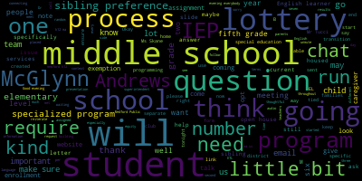

[Galusi]: Good evening, everybody. Just going to give it a few minutes as people are coming in and connecting to audio. Good evening, everybody. I'm just going to give it a minute or two as people are logging on and connecting to audio. Okay. Well, good evening, everybody. I'm going to try and be mindful of time. I think we'll just start as some people are still kind of coming into the meeting and connecting to audio. We'll just start with the agenda and some introductions. Just want to say thank you for being here. Oh, but I'm sorry, I advanced a slide before. Hold on one second, please. This is what I get for trying to do too many things at once. I'll just do a reset as we're just kind of...
[SPEAKER_01]: Okay, well, here we go.
[Galusi]: Thank you everybody for being here. Oops, sorry about that. Thank you. Okay, we're going to get started. Sorry for that little brief tech tech issue. My name is Suzanne Galusi. I'm the interim superintendent. I thank you very much for joining us tonight so we can discuss the middle school lottery assignment and process. On the call tonight with us, we have some of our team members, and I just want to make sure that we introduce them before I get started. We have assistant superintendent Dr. Peter Cushing on the call, both middle school principals Jennifer Skane and Nick Tucci, and we have our communications director Will Pippicelli. And we thank all of you for joining us tonight. I'm going to just go through a very brief slide presentation to give a little bit of context to this process. And we're going to end with some questions and answers at the end. So if you could just hold your questions till the end, I'll stop the slide share and we'll have more of an opportunity for you to ask some questions and get some responses. So without further ado, I'm going to start with a little bit of the background. So before the spring of 2019, in Medford Public Schools, the middle school families used to have choice in the assignment of their child for grade six. This posed a lot of issues, especially over time. So what we started to see in Medford Public Schools was the enrollment totals were not the same from both middle schools. There was an issue because of that for overcrowding, which could also have some increased burdens on families and administration and just the functioning of the buildings. First and foremost, though, there were some equity issues that were created when we also looked at the enrollment for both buildings. So when Dr. Maurice-Edouard Vincent came in as superintendent of schools, she created the lottery process to resolve a lot of these issues. So what we have in place right now was that policy that was created under her. That policy is as follows. So 50% of the fifth grade of each elementary school will go to the Andrews, and 50% of the fifth grade will go to the McGlynn Elementary School. If there is a student that is an English learner in need of English learner services or special education services at a program level, which I'll talk a little bit more specifically about in an upcoming slide, based on their needs, they will be placed at the middle school that offers that program. Students on IEPs that do not require program to meet the needs of their IEP will be distributed evenly between the Andrews and the McGlynn. Sibling preference is also something that we take into consideration when assigning students, but it does only apply to 5th grade students with a current sibling in grade 6 or 7. And we do build in some buffer seats through this lottery process, which I'll talk a little bit more about for the McGlynn Elementary School because of the needs of the EL program that's housed there. So in terms of running the lottery process, there are going to be four exemptions that I just briefly highlighted. The first exemption in terms of placing students, or I should say maybe not having them part of the lottery, is any student that requires English learner services. The entire English learner program is housed at the McGlynn Middle School. And so any students requiring those services will automatically be assigned to the McGlynn Middle School. And therefore they will not be run in the lottery. The second exemption is for students that are on an IEP but require a specialized program. Many of you may know, and if you don't, a lot of our special education specialized programs are housed at the elementary level in different schools. At the middle school level, that is still the case. So for example, language-based programming, one of the classes is at the Andrews, one may be at the McGlynn. Connections, I believe, is at the McGlynn, but the therapeutic learning program is at the Andrews. If your child requires one of those specialized programs per their IEP, they will be placed at the middle school that offers that program or that houses that program. This is something that would be discussed at your team meeting with your special education team, which is facilitated by the ETL. Every student on an IEP, whether it's specialized programming or an IEP, will have a transitional meeting. If you have not had one already, there will be one that will be coming up before the end of the school year. And at that meeting will be the ETL, as well as maybe a coordinator, as well as the ETL of one of the middle schools to help talk through that process. I can answer more specific questions in the Q&A, but wanted you to be aware of If your child through IEP needs, requires a specialized program, that will be discussed and will not be run in the lottery. They will be placed at the school that houses that program. The third exemption is for students on IEPs that are not tied to a specialized program. The only exemption here is that students who are on an IEP to ensure equity in the assignment, we run a separate lottery for students on an IEP, because the needs of students on IEPs that are not tied to a specific program can be met at both middle schools. They can be met at the Andrews and they can be met at the McGlynn. And so to ensure equity in our assignment process, we run a separate lottery for students on an IEP to ensure that there's equal distribution. And then the last exemption is sibling preference. And so parents do have the right to opt their fifth grade student into a sibling preference if you have a child or if they have a sibling that is a current grade six or seven student, which means next year they would be in middle school with their sibling because they would be in grades seven or eight. I do think it's important to note that there are some clarifications to the sibling preference. One is that I just spoke about the specialized program needs. If your child requires a specialized program, that supersedes sibling preference. Sibling preference does not apply to younger siblings that are in McGlynn Elementary. And sibling preference does not include current eighth grade students as they will not be on the same campus for the school year 25-26. Here is a link, it will be sent out to you separately, but we've also included here because we will make sure that the slide deck is on our website. And so if there is a Google form here, if you would like to opt into this. So just to kind of explain a little bit more the lottery process, we have a sample elementary school here. So if we are just going on the basis that an elementary school has 103 fifth grade students, just to give you a breakdown of how the lottery may go and what it may look like, if there are 20 students in that current fifth grade class that are EL, then they will automatically be going to middle school A. If eight of those students have sibling preference, then let's say one is going to middle school A and seven are going to middle school B because that's where their sibling preference lies. Three, require special education programming. Two of them require the program that's housed at middle school A, and so they are assigned to middle school A. One of those students requires a program that's housed in middle school B and will therefore be assigned to middle school B. 12 of the 103 students in the fifth grade are on an IEP. in addition to the three that I just mentioned in a specialized program. Those 12 will have their own lottery, and six will go to the Andrews, and six will go to the McGlynn. And then that would leave 60 students that would enter the general lottery, where we would poll so that those 60 students, half would go to the McGlynn, and half would go to the Andrews. But I do think it's important to note that we do leave like a 3%, like three seats. per school for the McGlynn Middle School, because the nature of the EL programming, we have to make sure that we are meeting the needs as students are entering the district throughout the school year. So we do keep a small buffer there to ensure the numbers stay as close to balanced as possible. And so just to review the lottery process timeline, which I know was sent out, but just so that we're all aware, the sibling opt-out, opt-in forms. will be emailed to eligible caregivers tomorrow. There'll be a Google form on there for you to complete electronically if you, to let us know what your option is. Would you like to opt in to sibling preference? Or no, you would not, you'll opt out. Monday is the deadline for those forms. Next Thursday, Your fifth grade child is going to come home with a letter in their backpack. that will have their lottery number on there. We assign every student a generic lottery number that we use like a random automized system here. So they will come back. This number is not attached to them within Medford Public Schools in any fashion. It is not their school identification number that we use. It is a, randomly generated number so that we can keep some confidentiality and make sure we're being random in the process. Then on Tuesday, April 15th, we will post the results on the district-wide website by 3 p.m., and caregivers are also going to receive an email with the link to the results that day. So on that day when we run the lottery, we just use a random, automized platform, like a website, that helps us run the numbers. We will pull the lottery exactly as I detailed, so we will have a separate lottery for students on IEPs that are not tied to specialized program. programs, and then we will run a lottery for students from each school that are not tied to specialized programs. And then that list will be generated by student's number on the district website, and then more specifically with caregiver email on that day. And then the week of April 28th, you will get a hard copy letter sent to you in the mail. So that that way, caregivers are getting two ways that we're reaching out to you with the results of the lottery. I also think it's important to note that both middle schools have their orientations the week following the hard copy letter coming home. So Wednesday, May 7th, will be the Andrews Middle School open house, and Thursday, May 8th, will be the Moglen School open house. Both start at 6 p.m. at the respective schools. I know that was a lot of information. I do think it's important to note here we are, there is a middle school lottery email, mslottery at medford.k12.ma.us. If you have any questions or any follow up, please use this email. as we're trying to keep, I want to be mindful in responding to questions and concerns and keeping this separate email is going to help us stay organized and responsive. So we will make sure that this is posted so that you're able to kind of access that link. I am going to stop screen sharing now so that I'm able to see participant faces and we're able to change the, the settings here a little bit so that if people have questions, I believe Dr. Cushing is the chat sent just to us. OK. So we can monitor your chat. If you have a question specifically in the chat, we can handle it that way. And otherwise, you can feel free to, can we allow people to?
[Cushing]: They can request one mute.
[Galusi]: Great, so you can request to unmute and turn, you can request to unmute if you would like to ask a question live or you can put it in the chat and we can answer your questions directly through the chat. To clarify, yes, the EL is the English Language Learners Program. It's the English Learners Program, so students that require services and instruction in English because English is a second language to them. And if while we're waiting, for questions to come in the chat or questions for people to request to unmute. If there are specific questions that maybe Mr. Tucci or Ms. Skane or Mr. Pippicelli, who helps me monitor the MS lottery email, may be recurring questions we can also answer as we're waiting. Is the open house only for parents? Mr. Tucci and Ms. Skane.
[Tucci]: Yes, sir, certainly. So we would love to welcome the entire school community when you get your lottery information and your school identification to our open houses. So that's all caregivers as well as your students would be welcome to attend. And that's a really informative event. It gives us an opportunity to interact and understand our next round of incoming sixth graders and their families. And typically how that night goes, it starts in our auditorium or cafeteria and we welcome the group and then we embark on a scavenger hunt. We get a chance to meet grade level teams, to meet teachers, to explore the wide range of clubs and activities and offerings that we have at the middle school. And it's a really wonderful and informative evening. But this is just the first introduction to middle school that we provide. And we have many opportunities over the summertime to come into the school to get to meet your principal. And also we offer a summer orientation as well. So we look forward to a lot of great transitional events to welcome the next crop of middle school students and families.
[SPEAKER_04]: Nick said it so well, so I'll just leave it at that.
[Galusi]: I do think it's important to note, as we're waiting, if more questions come into the chat, the topic of the middle school assignment process did come up at a lot of my meet and greets, especially at the elementary and the middle school level. I think it's important to note that in my transition into this role, part of my transition plan is to take a global look at enrollment at the elementary level. and the assignment process at the middle school level. And I think at the opening of this presentation, we explained kind of the historical background and the context for why this process was created. But I think that process was pre-COVID, and we definitely have seen a shift in our enrollment and the needs of our students in these past five to six years. And so one of the things that I am looking at is what this process would look like moving forward because we want to make sure that the process is meeting the needs of the students and the families and the district. And there's some room to grow here. So Rebecca would, do you have a question? Okay.
[SPEAKER_05]: Perfect. Thank you. I have so many questions, very honestly. Not so much about the lottery. I feel like that's going to be a flip a coin situation for my child. But I'm just curious about middle school. When do we get a chance to learn about what middle school is like? The buildings are great and all, and the teachers are great, but what do we expect? How, you know, what are the kids going to be learning? How, what's the vibe? What are things that parents need to be thinking about? You know, rumor has it we've got some interesting behavior profiles for this class of 2032. Like how is behavior management handled in middle school, you know, developmentally and so forth? So some of the, those are some of my big questions that I have coming in. So I don't know at what point we kind of get to start to talk about those things.
[Galusi]: No, that's a very thoughtful question. We appreciate that. I can just give the highlights, but I do think that this is important for the middle school principals to kind of respond to. But I think everything that you just said is that that initial piece is the open house. And I think that's kind of why you know, orientation, open house, it is an opportunity for students and caregivers to go to the school, yes, have a tour, but meet some of the staff and get to have a little bit more of an understanding about what middle school looks like. And so I think that's an important night. And then the pieces over the summer are also going to help with their transition as well. But I don't know Jen or Nick want to kind of like expand on that?
[Tucci]: I'd love to. From my end, one of the things I really work hard in preparation for the open house is to work with my student ambassadors. And we're really thoughtful about having some really great student ambassadors at the Andrews and the McGlynn as they prepare for the open house to feel the questions that are inevitably going to be coming, to help to reassure and prepare our caregivers and our students for you know, their transition to middle school. So I actually put a lot of work in with them to try to empathize with them, to say, think back to when you were going in to middle school and some of the questions that were coming up, some of the things you were nervous about, like opening a locker or managing homework or managing the expectation of all these different teachers. And, you know, position yourself to be able to answer the questions from the community and the feedback we oftentimes will get is that the students and the student ambassadors are really the stars of the show, and they're really informative with helping our school community and make this transition to middle school. Middle school is a really fun time. It's a time that we really, you know, specialize in certainly and working with this age of adolescence and we understand the great responsibility it takes to be able to meet the needs of all of our students. And, you know, I am super excited to once again, you know, lead the middle school, the transition to the from the fifth grade is the sixth grade at the McGlynn Middle School. I know Ms. Skane is too as well. The students will be balancing all their different subjects from math to English to social studies to science and the wide array of exploratory opportunities and clubs, activities and sports that we have to offer. They come into their own, and it's really great to support them in that effort. As it relates to school discipline matters, Ms. Gane and I, we really work hard. have a really united approach and we use a lot of the same tools to be able to support our students. Tools from sometimes some punitive measures, working certainly collaboratively with teachers and our community and our parents, but also a lot of restorative practices too as well to be able to engage our students and capturing some important teachable lessons. So thank you for the thoughtful question. And I know it's hard to answer in just this quick setting here, but stay tuned for lots of great information. And we look forward to inspiring our students and helping them get excited about middle school and what's to come.
[Galusi]: Jen, did you want to?
[SPEAKER_04]: Yeah, I'll add that I think Mr. Tucci and I have worked very hard to collaborate so that students' experiences at either middle school are pretty similar. We try to offer the same opportunities for students. So I think that students would share that while we probably have some different personalities in the building, I think both experiences from feedback from students is a positive one. And I also want to just share that I agree with Suzanne. We understand that there's so many questions. Nick and I both start very early in the summer reaching out with some important like as you transition information. that helps both parents and students be prepared for that transition. But I also want to say our 6th grade teams are really essential in that process because they understand what the 6th grade transition is like for students, and they do a lot of things to support that process.
[Galusi]: Since you're still unmuted, Ms. Skane, can you also talk about how students and families find out information specifically about clubs, sports, and activities?
[SPEAKER_04]: Sure. So both Nick and I, around the same time usually, we prepare during, students have a wind block during their schedule. And during that wind block within the first month of school, they will have an opportunity to attend a activities fair where they will get an opportunity to see all of the different activities, learn a little bit more about them, speak to students who are part of those activities. And the nice piece about both middle schools is that we have some activities that are independent for each of us, that each one of us has the same type of club. But if one school has a club that the other student, other school doesn't, students are welcome to go over to the McGlynn afterschool or come over to the Andrews afterschool. So they have many more opportunities available to them.
[Galusi]: Thank you. You're welcome. So, Peter, can you check the chat? Because I think you're getting a lot. The one I'm going to say specifically, especially, you know, a lot of us are parents on this call as well. So I know my youngest would have been the one that the letter never came home from school. that is the case for you and your child doesn't come home with a letter that has their number on it, please make sure that you reach out to the MS Lottery email and we will be able to give you your child's number so that you have that ahead of the draw if you're tracking it on the website. That's one of the reasons why we made sure we set up a specialized email for that.
[Cushing]: I just want to jump in. We had a parent talk about twins. So twins are a fairly unique situation. Generally speaking, they're assigned their own unique number. And if the draw places them at the same school, then the the deed is done and they're placed at the same school. If by chance they're placed at both schools, meaning twin one is at the Andrews and twin two is at the McGlynn, by nature of sibling preference in the past, what we've done is we've allowed the family to make the choice as to which school they will actually attend so the children are not split up. The family can choose, and this has happened in the past, for they land where they land and that's where they're going to go. Say again.
[Galusi]: Pending enrollment.
[Cushing]: Yes. Yep. And as far as anyone with an IEP, if there's a specialized placement, that's something that we would be able to have a conversation about as far as sibling preference as well, pending enrollment. But generally speaking, the lottery is allowed to do what it needs to do to try to split students up evenly.
[Galusi]: Could you also since this pertains to you, could you just talk a little bit about the bus, the busing in terms of is there a certain mileage to all students?
[Cushing]: It is, generally speaking, busing over two miles for students, but the buses all come and pick up in the afternoon at the Andrews, so students from the McGlynn will walk over, generally speaking. Mr. Tucci, Mr. Bruno and Ms. Lally and Ms. Skane are out there along with teachers as students make the journey over to the Andrews. Students are dropped between the two schools in the morning, same location. So we are definitely able to provide transportation under the approved distances within the district. I'm just trying to read the chat here.
[SPEAKER_04]: And I just add, we also offer late bus transportation three days a week so that students can stay for extra help or they can become a member of one of the many clubs or activities.
[Cushing]: It was a question about curriculum. Curriculum is unified across the district. So just want to be clear about that as well. And while each school has its own unique feel, the curriculum your child gets is based on the Massachusetts state frameworks. And as I mentioned, adopted uniformly across grades six, seven, and eight. And I think that's all the questions we have right now in the chat.
[Galusi]: So just to reiterate, we're going to keep monitoring the chat, but I do want to thank you all for taking time out to be here tonight. You can still put your questions in the chat. You can still ask to turn your camera on, ask to be unmuted to ask a question that way, or you could always follow up. with a question to mslottery at medford.k12.ma.us, and we'll make sure that we get back to you in a timely manner. So just to reiterate, clubs run both at each individual middle school and some of them run jointly, collectively, so that students from the McGlynn, and the Andrews join together in the club. So it's a little bit of everything. Mr. Tucci, would you like to talk about maybe how we select what clubs and sports are run? I think like teachers can make recommendations and participation.
[Tucci]: Yeah, so every year we go through a process where we certainly like to pride ourselves in having opportunities for students to voice their opinions and perspectives. And oftentimes we will consider adding to our array of clubs and activities, given maybe certain student interests. So I'll give an example. This past year at the McGlynn Middle School, we added a Lego club. And there has been really significant interest in being able to have that club at our school. And just this spring, after a significant amount of interest from my student body, we just added an outdoor soccer club that we'll be starting next week. So oftentimes, as long as there's interest in having or hosting a club, we'll find a way to put together a club or an activity to be able to support our students. And we want to keep them involved in the life of our school. And, you know, to reiterate something that Ms. Skane and Dr. Glusi had mentioned before, we like to also pride ourselves on having clubs and activities and sports being shared between the two schools. We recognize that maybe some students may end up going to a different school, whether it be the Andrews or McGlynn, and they look forward maybe to a club or activity that they can spend time with, with a peer that they had a great connection with, maybe in their neighborhood or one of their elementary schools. So certainly we love to pride ourselves on having a really great array of clubs and activities that are geared to the current student level of interest.
[SPEAKER_01]: Thank you.
[Tucci]: Of course.
[Galusi]: So just to reiterate, I think maybe one or two people might have popped on a little bit later. We went through a presentation that just kind of provided a little context to the lottery process, which will be posted on our website so that you can see that information, as well as have access to any of the links that are live. We're now kind of just answering some questions you may have about the process or about middle school.
[Cushing]: Dr. Galussi, another question did just come in. So in the twins, as I've worked with this previously, if they do end up in the same middle school, you can definitely work with the principals to have conversations, you know, trying to make sure that each child has their own unique experience with twins. You know, we've definitely had parents say like, oh, can I make sure they're on different sides or, something along those lines. And Principal Tucci or Principal Skane, if you'd like to further add, but that's generally speaking how we've done it in the past.
[Tucci]: Absolutely. We've had work with families before where they would like to have maybe a twin on the same side. I've had families say that I'd like to have my twins in the same classes. Other families might be like in a situation where they said, I'd like to be able to have the twin on one side of grade six and the other side of grade six. And then maybe we could sprinkle in a few exploratory classes where they might have some of those classes together. So we can really kind of work with families to, you know, usually tailor it to meet the needs of individual students. We try to do that all day, every day to meet the needs of our students. And we want to work collaboratively with our caregivers to do so.
[SPEAKER_04]: There's a question that's come up about the list of clubs and whether or not there is a school newspaper. So currently the Andrews does not have a school newspaper, but that does not mean that we would not consider it. As Mr. Tucci talked about, I had a student who came to us this year and was super excited about the Future Cities Club. So we had students who started that club and They competed in Boston and did a great job this year. So we are open to having different ideas and different, you know, students definitely have their own set of interests and needs and they do change as different students come around. I do have a list of clubs on, I believe it's on our website, but if not, I will check and make sure that it is there, that you could look, I don't know, Mr. Tucci, if you have the same, I think you do, you could look right under the activities under the more information on our webpage.
[SPEAKER_01]: Yeah.
[Tucci]: One of the things I'll just mention is we don't have a school newspaper either, but we actually have a media club. And it's really wonderful to see. But our students, they play broadcasters, essentially, at the McGlynn Middle School. And they broadcast what's called our McGlynn Morning News Show. And it's great to be able to see them create a wonderful morning show to help to broadcast announcements and really enrich our school environments and promote our school culture, too, as well. So we really value our students participating in the life of our school.
[SPEAKER_01]: Thank you. I don't have any more questions. Dr. Cushing or everybody else, do we have any more questions in the chat?
[Cushing]: Just about sides.
[Galusi]: Right now, the current structure at middle school, and Ms. Skane and Mr. Tucci can elaborate a little bit more, but there are two sides to every grade level, right? So if you just look at a grade six team at the Andrews, there's side A and side B. So basically you're taking the entire grade six cohort per building, and you're breaking them up into two different teams. They have the same classes. It's just two different teams of teachers so that we're making sure that we're meeting the needs of students and balancing enrollment. And the teams function as cohorts throughout the year. So I think caregivers will have a lot of communication from the team of teachers throughout the year.
[SPEAKER_04]: Um, yeah, opportunity. So their team is mostly for their core subjects, but students do have an opportunity to kind of mix within both teams for their United Arts or Unified Arts or exploratory as well as world language.
[Galusi]: Okay, well, thank you again so much for coming. We appreciate you and your thoughtful questions. If you have any more specific questions, please reach out to the MS lottery at medford.k12.ma.us and we can answer your questions there. And we look forward to thoughtful transitions for your children and hope you have a wonderful rest of the evening. Thank you so much for coming.
|
total time: 27.37 minutes total words: 3273  |
|||
{kind=link}